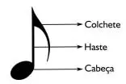
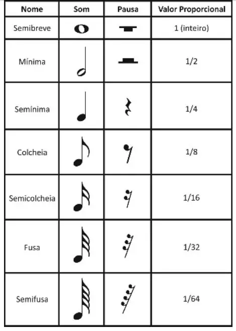
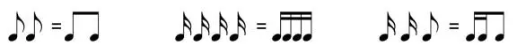
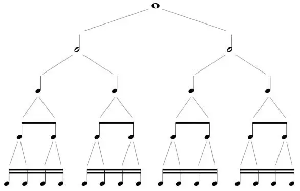

Agora que já sabemos definir a altura das notas na pauta, iremos descobrir como definir a duração delas e
suas pausas.
As figuras de som podem ter até três partes:

Quando a figura está localizada na parte inferior da pauta (até a terceira linha), sua haste é posicionada
para cima. Já quando a figura está localizada na parte superior da pauta (a partir da terceira linha), sua
haste é posicionada para baixo. Quando a figura está localizada na terceira linha, a haste pode ser
posicionada para cima ou para baixo.

Na música, existem símbolos que representam os sons e o silêncio.
Estes símbolos nos indicam quando tocar e quando parar de tocar uma nota ou acorde.Eles também nos indicam
quando não devemos tocar nada.
De acordo com Bohumil Med (1996):
“Em música existem sons longos e sons breves. Há também momentos quando se interrompe a emissão do som: os
silêncios. (…) A duração é a maior ou menor quantidade de um som. A relação entre durações do sons define
o ritmo.”
Há figuras que representam a duração dos sons, assim como existem figuras que representam a duração dos
silêncios (pausas). As figuras que indicam a duração dos sons também são chamadas de Valores Positivos,
enquanto as que indicam a duração das pausas são chamadas de Valores Negativos. Os valores indicam uma
relação proporcional entre cada figura.
Temos sete figuras de som e de pausas. Para cada figura de som existe uma Pausa correspondente.

Semibreve: é a figura com maior duração atualmente e as demais figuras são frações dela. É
representada pelo n° 1.
Mínima: vale metade da Semibreve. É representada pelo n° 2, pois cabem 2
Mínimas em 1 Semibreve.
Semínima: vale metade da Mínima. É representada pelo n° 4, pois cabem 4
Semínimas em 1 Semibreve.
Colcheia: vale metade da Semínima. É representada pelo n° 8, pois cabem 8
Colcheias em 1 Semibreve.
Semicolcheia: vale metade da Colcheia. É representada pelo n° 16, pois
cabem 16 Semicolcheias em 1 Semibreve.
Fusa: vale metade da Semicolcheia. É representada pelo n° 32, pois cabem
32 Fusas em 1 Semibreve.
Semifusa: vale metade da fusa. É representada pelo n° 64, pois cabem 64
Semifusas em 1 Semibreve.
As colcheias, semicolcheias, fusas e semifusas podem ser unidas pela Barra de Ligação. Isto acontece quando
há uma sucessão destas figuras de som no pentagrama. Veja a seguir alguns exemplos:

É importante ter em mente qual é a relação proporcional entre cada uma das figuras de som e de pausa.
Podemos observar que a Semibreve é a figura que possui o maior valor de tempo em relação às outras figuras.
Ela corresponde à duas Mínimas.
A Mínima corresponde à metade de uma Semibreve e ao dobro de uma Semínima. O mesmo ocorre com a Semínima,
que corresponde à metade de uma Mínima e ao dobro de uma Colcheia. O raciocínio se estende para o restante
das figuras. Veja na figura a seguir.

Acidentes e Sinais de Alteração no Pentagrama
No pentagrama, os acidentes e sinais de alteração são indicados antes da nota. Veja aseguir alguns exemplos.

Quando há mais de um acidente dentro de um mesmo compasso, o último acidente sempre vai anular o anterior.